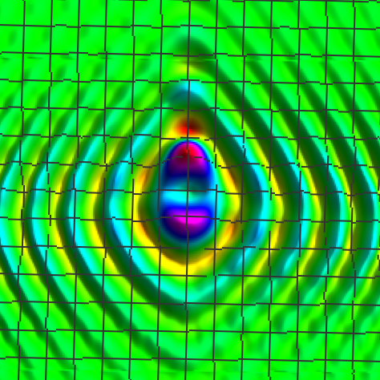
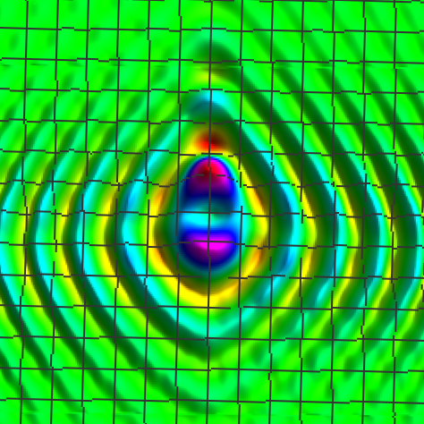

I study Physics, Mathematics, and Statistics at
Colby College in Waterville, Maine, USA.
In a few months, I will be starting my PhD in Physics at the Massachusetts Institute of Technology
(
MIT), studying ultracold quantum gases.
I'm a member of the dazzlin' Ultimate Frisbee team at Colby (aptly named "Center for Disc Control"). When I'm not aligning lasers in the lab or playing ultimate,
I practice classical guitar and take photos with my Nikon cameras. Check out some of my favorite shots
on my
Instagram and
here.
I also dabble in mathematical research, focusing on analysis and differential equations. The astonishing similarity between the green and purple images at the top of this page,
generated using two very different mathematical operations, motivates a new local limit conjecture which Professor Evan Randles at Colby and I are aiming to prove.
Check out our most recent submission
here on arXiv, or read a short summary of this work
here.


 
